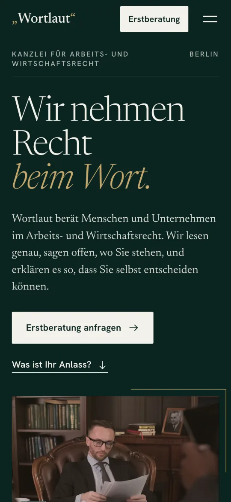

Beispiel · erfundener Betrieb
Website für Kanzleien erstellen lassen: die Beispielseite Wortlaut
Wer eine Kanzlei sucht, hat einen Anlass und wenig Lust auf Juristendeutsch. Wenn Sie als Kanzlei oder Anwaltsbüro eine Website erstellen lassen möchten, zeigt diese Beispielseite für einen erfundenen Betrieb, wie Anlässe, Alltagssprache und eine Anfrage für die Erstberatung zusammenpassen. Rechtsberatung ist sie nicht.
Eine Kanzlei für Arbeits- und Wirtschaftsrecht, gesetzt wie ein guter Schriftsatz: Randnummern, feine Linien, große Serifen. In einer Szene wird ein Vertragssatz durchgestrichen und in Klartext übersetzt.

Welche Aufgabe löst die Seite?
Wer eine Kanzlei sucht, hat einen Anlass und wenig Lust auf Juristendeutsch. Die Seite spricht Alltagssprache, ordnet nach Anlässen statt nach Paragrafen, erklärt den Ablauf und führt zur Anfrage für eine Erstberatung.
Was enthält die Seite?
- Anlässe
- Klartext-Szene
- Anfrage mit Vorauswahl
Flaschengrün und Papier, gesetzt mit Randnummern, feinen Linien und großen Serifen. Die Anlässe stehen in Alltagssprache unter drei Reitern, in einer Szene wird ein Vertragssatz durchgestrichen und in Klartext übersetzt. Es folgen der Ablauf in fünf Schritten, die Hausordnung der Kanzlei und die Anfrage für eine Erstberatung.
Wie jede unserer Seiten ist sie zuerst für das Handy gestaltet und lädt schnell.
Für wen passt so eine Seite?
Für Kanzleien, Steuerbüros und andere beratende Berufe, die verständlich zeigen wollen, wobei sie helfen, und Anfragen mit dem passenden Anlass bekommen wollen.
Häufige Fragen zur Website für Kanzleien
Wie spricht eine Kanzlei Mandanten an, die keine Juristen sind?
In Alltagssprache. Die Beispielseite Wortlaut stellt die Anlässe unter drei Reitern so dar, wie Menschen sie erleben, nicht wie Gesetze sie nennen.
Wie zeigt die Seite, was man von einer Kanzlei bekommt?
Mit einer kleinen Szene: Ein Vertragssatz wird durchgestrichen und in Klartext übersetzt. Besucher sehen den Unterschied, bevor sie anfragen.
Was ist bei Werbung für Kanzleien zu beachten?
Für Anwälte gelten berufsrechtliche Regeln für Auftritt und Werbung. Die prüfen Sie oder Ihre Kammer. Wir bauen, was Sie freigeben, und geben keine Rechtsberatung.
Wie wird der Ablauf eines Mandats erklärt?
Als Ablauf in fünf Schritten, damit Mandanten wissen, was auf sie zukommt. Dazu kommt die „Hausordnung“ der Kanzlei: wie sie arbeitet und was sie erwartet.
Wie läuft die Anfrage für eine Erstberatung?
Über ein kurzes Formular. Welche Angaben es abfragt, legen wir mit Ihnen fest, auch mit Blick auf Vertraulichkeit. In der Beispielseite sendet es nichts.
Wie entsteht Ihre eigene Seite?
In sechs Schritten: Briefing, Design, Feedback, Umsetzung, Abnahme, Live. Sie sehen den Entwurf, bevor wir bauen, und online geht die Seite erst mit Ihrem Okay. Zum Ablauf
Websites gibt es ab 2.990 € netto, einmalig. Alle Preise finden Sie bei MAKE Innovation: Alle Preise. Mehr zu Video und Reels und zu Social Media steht auf der Startseite.
Stand: November 2026